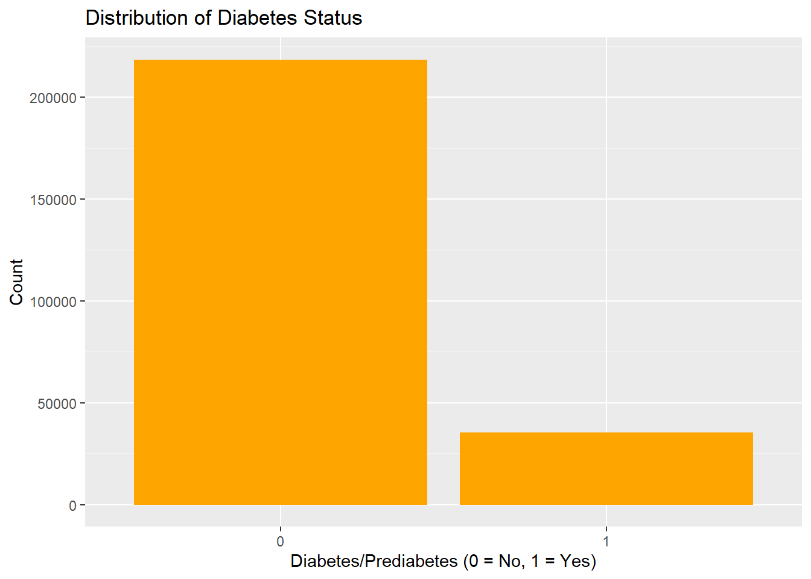

library(tidyverse)
library(readr)
library(janitor)Exploratory Data Analysis
ST 558: Final Project - Creating a Vignette
EDA
About the Data
The dataset we will be using throughout this project is the “diabetes _ binary _ health _ indicators _ BRFSS2015.csv” dataset, which is a cleaned dataset of 253,680 survey responses to the CDC’s Behavioral Risk Factor Surveillance System (BRFSS2015) for the year of 2015. The survey collects responses from many Americans on health-related risk behaviors, chronic health conditions, and the use of preventative services. The target variable Diabetes_binary has 2 classes: 0 for no diabetes and 1 for diabetes/prediabetes. This dataset has 21 feature variables and is not balanced. The main predictor variables that we will be considering today are high blood pressure, physical activity, age, and income.
We will begin by using a relative path to import the data set. Then, we will observe the current structure of the data and check for any missing values.
diabetes_data <- read_csv("diabetes_binary_health_indicators_BRFSS2015.csv")Rows: 253680 Columns: 22
── Column specification ────────────────────────────────────────────────────────
Delimiter: ","
dbl (22): Diabetes_binary, HighBP, HighChol, CholCheck, BMI, Smoker, Stroke,...
ℹ Use `spec()` to retrieve the full column specification for this data.
ℹ Specify the column types or set `show_col_types = FALSE` to quiet this message.head(diabetes_data)# A tibble: 6 × 22
Diabetes_binary HighBP HighChol CholCheck BMI Smoker Stroke
<dbl> <dbl> <dbl> <dbl> <dbl> <dbl> <dbl>
1 0 1 1 1 40 1 0
2 0 0 0 0 25 1 0
3 0 1 1 1 28 0 0
4 0 1 0 1 27 0 0
5 0 1 1 1 24 0 0
6 0 1 1 1 25 1 0
# ℹ 15 more variables: HeartDiseaseorAttack <dbl>, PhysActivity <dbl>,
# Fruits <dbl>, Veggies <dbl>, HvyAlcoholConsump <dbl>, AnyHealthcare <dbl>,
# NoDocbcCost <dbl>, GenHlth <dbl>, MentHlth <dbl>, PhysHlth <dbl>,
# DiffWalk <dbl>, Sex <dbl>, Age <dbl>, Education <dbl>, Income <dbl># Check structure of data
str(diabetes_data)spc_tbl_ [253,680 × 22] (S3: spec_tbl_df/tbl_df/tbl/data.frame)
$ Diabetes_binary : num [1:253680] 0 0 0 0 0 0 0 0 1 0 ...
$ HighBP : num [1:253680] 1 0 1 1 1 1 1 1 1 0 ...
$ HighChol : num [1:253680] 1 0 1 0 1 1 0 1 1 0 ...
$ CholCheck : num [1:253680] 1 0 1 1 1 1 1 1 1 1 ...
$ BMI : num [1:253680] 40 25 28 27 24 25 30 25 30 24 ...
$ Smoker : num [1:253680] 1 1 0 0 0 1 1 1 1 0 ...
$ Stroke : num [1:253680] 0 0 0 0 0 0 0 0 0 0 ...
$ HeartDiseaseorAttack: num [1:253680] 0 0 0 0 0 0 0 0 1 0 ...
$ PhysActivity : num [1:253680] 0 1 0 1 1 1 0 1 0 0 ...
$ Fruits : num [1:253680] 0 0 1 1 1 1 0 0 1 0 ...
$ Veggies : num [1:253680] 1 0 0 1 1 1 0 1 1 1 ...
$ HvyAlcoholConsump : num [1:253680] 0 0 0 0 0 0 0 0 0 0 ...
$ AnyHealthcare : num [1:253680] 1 0 1 1 1 1 1 1 1 1 ...
$ NoDocbcCost : num [1:253680] 0 1 1 0 0 0 0 0 0 0 ...
$ GenHlth : num [1:253680] 5 3 5 2 2 2 3 3 5 2 ...
$ MentHlth : num [1:253680] 18 0 30 0 3 0 0 0 30 0 ...
$ PhysHlth : num [1:253680] 15 0 30 0 0 2 14 0 30 0 ...
$ DiffWalk : num [1:253680] 1 0 1 0 0 0 0 1 1 0 ...
$ Sex : num [1:253680] 0 0 0 0 0 1 0 0 0 1 ...
$ Age : num [1:253680] 9 7 9 11 11 10 9 11 9 8 ...
$ Education : num [1:253680] 4 6 4 3 5 6 6 4 5 4 ...
$ Income : num [1:253680] 3 1 8 6 4 8 7 4 1 3 ...
- attr(*, "spec")=
.. cols(
.. Diabetes_binary = col_double(),
.. HighBP = col_double(),
.. HighChol = col_double(),
.. CholCheck = col_double(),
.. BMI = col_double(),
.. Smoker = col_double(),
.. Stroke = col_double(),
.. HeartDiseaseorAttack = col_double(),
.. PhysActivity = col_double(),
.. Fruits = col_double(),
.. Veggies = col_double(),
.. HvyAlcoholConsump = col_double(),
.. AnyHealthcare = col_double(),
.. NoDocbcCost = col_double(),
.. GenHlth = col_double(),
.. MentHlth = col_double(),
.. PhysHlth = col_double(),
.. DiffWalk = col_double(),
.. Sex = col_double(),
.. Age = col_double(),
.. Education = col_double(),
.. Income = col_double()
.. )
- attr(*, "problems")=<externalptr> # Check for missing values
colSums(is.na(diabetes_data)) Diabetes_binary HighBP HighChol
0 0 0
CholCheck BMI Smoker
0 0 0
Stroke HeartDiseaseorAttack PhysActivity
0 0 0
Fruits Veggies HvyAlcoholConsump
0 0 0
AnyHealthcare NoDocbcCost GenHlth
0 0 0
MentHlth PhysHlth DiffWalk
0 0 0
Sex Age Education
0 0 0
Income
0 Since this data has already been cleaned, there are no missing values present. However, by looking at the structure of our variables, we see that we will need to convert the majority of them to factors. We will leave BMI, MentHlth, and PhysHlth as numeric.
diabetes_data <- diabetes_data |>
mutate(Diabetes_binary = as.factor(Diabetes_binary),
HighBP = as.factor(HighBP),
HighChol = as.factor(HighChol),
CholCheck = as.factor(CholCheck),
Smoker = as.factor(Smoker),
Stroke = as.factor(Stroke),
HeartDiseaseorAttack = as.factor(HeartDiseaseorAttack),
PhysActivity = as.factor(PhysActivity),
Fruits = as.factor(Fruits),
Veggies = as.factor(Veggies),
HvyAlcoholConsump = as.factor(HvyAlcoholConsump),
AnyHealthcare = as.factor(AnyHealthcare),
NoDocbcCost = as.factor(NoDocbcCost),
GenHlth = as.factor(GenHlth),
DiffWalk = as.factor(DiffWalk),
Sex = as.factor(Sex),
Age = as.factor(Age),
Education = as.factor(Education),
Income = as.factor(Income))For the last step of preparation, we will rename all the variables to have more user-friendly names.
diabetes_data <- diabetes_data |>
clean_names() # Replaces all spaces with '_' and makes all letters lowercase.
names(diabetes_data) [1] "diabetes_binary" "high_bp" "high_chol"
[4] "chol_check" "bmi" "smoker"
[7] "stroke" "heart_diseaseor_attack" "phys_activity"
[10] "fruits" "veggies" "hvy_alcohol_consump"
[13] "any_healthcare" "no_docbc_cost" "gen_hlth"
[16] "ment_hlth" "phys_hlth" "diff_walk"
[19] "sex" "age" "education"
[22] "income" Summarizations
In this section, we will explore the diabetes dataset by creating several summarizations to better understand the distribution of some important health indicators and how they relate to the response variable, diabetes_binary. The main predictors we will be focusing on are high_bp, phys_activity, age, and income. As mentioned in the beginning, this dataset is not balanced. But how do we know that? Below we will break down the responses of diabetic and non-diabetic individuals.
table(diabetes_data$diabetes_binary)
0 1
218334 35346 ggplot(diabetes_data, aes(x = diabetes_binary)) +
geom_bar(fill = "orange") +
labs(title = "Distribution of Diabetes Status",
x = "Diabetes/Prediabetes (0 = No, 1 = Yes)",
y = "Count")
We can see that there are many more observations that reflect individuals who do not have diabetes than those who do. This imbalance may affect how a model performs on the data, but we will discuss that later on.
Let’s see how high blood pressure status compares to diabetic status. Below, we can see that individuals with high blood pressure show a much higher proportion of having diabetes than those with out high blood pressure. This can give a good indication that the high_bp variable will play a key role in predicting diabetic status.
table("High BP" = diabetes_data$high_bp, "Diabetes Status" = diabetes_data$diabetes_binary) Diabetes Status
High BP 0 1
0 136109 8742
1 82225 26604Let’s check out a bar plot comparing age groups by diabetes status. We see a similar trend between these two variables. In this dataset, most non-diabetic individuals fall within age groups 6–11 (ages 45–74), and most diabetic individuals fall within age groups 8–11 (ages 55–74), suggesting that diabetes becomes more common in the later middle-aged to early seniors. The plot clearly shows an upward trend in diabetes risk with age, especially staring around age group 8 (55-59 years).
ggplot(diabetes_data,
aes(x = age, fill = diabetes_binary)) +
geom_bar(position = "dodge") +
labs(title = "Counts of Age Levels by Diabetes Status",
x = "Age Category",
y = "Count")
Finally, let’s look into an individuals physical activity vs diabetic status. The contingency table below shows that individuals who did not engage in physical activity in past 30 days (not including job) have a higher proportion of diabetes compared to those who are active. We can see that there is a much larger difference between the number of individuals with and without diabetes when looking at those who are active..
table("Phys Activity" = diabetes_data$phys_activity, "Diabetes Status" = diabetes_data$diabetes_binary) Diabetes Status
Phys Activity 0 1
0 48701 13059
1 169633 22287